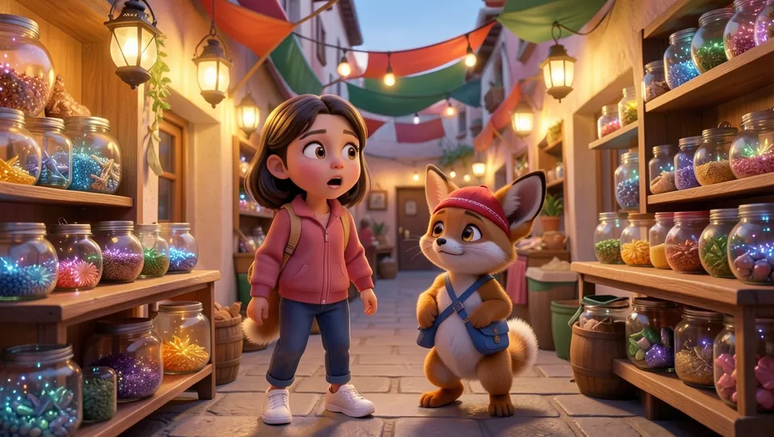

5 leçons de français de CE2 avec Filou, le petit fennec de Douz qui écrit son carnet de voyage. Chaque leçon commence par un dessin animé dont tu es l'héroïne, puis tu observes, tu complètes, tu transformes, tu fais la dictée, tu lis à voix haute… et tu évites les pièges !

3🫙 Le souk des motsLes familles de mots, les synonymes et les contraires 4🐪 Le marché de DjerbaLe groupe nominal et l'accord de l'adjectif 5🦎 Les lettres caméléonsc, ç, g, gu, ge, s et ss : les sons qui changent